CUARZO
Uniformidad técnica con tacto natural.
Cuarzo para sistemas de trabajo exigentes, con acabados limpios y superficies homogéneas que perduran bajo uso intensivo.
Superficies ideales para cocinas, baños y barras con un acabado refinado y duradero.
Muestrario de Colores

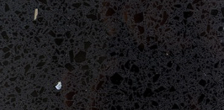
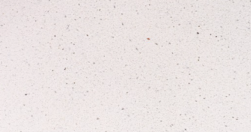
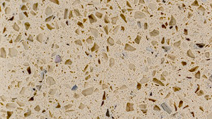
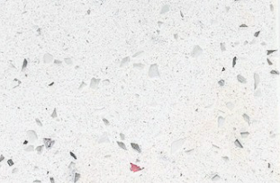
Proyectos Terminados

Encimera blanca
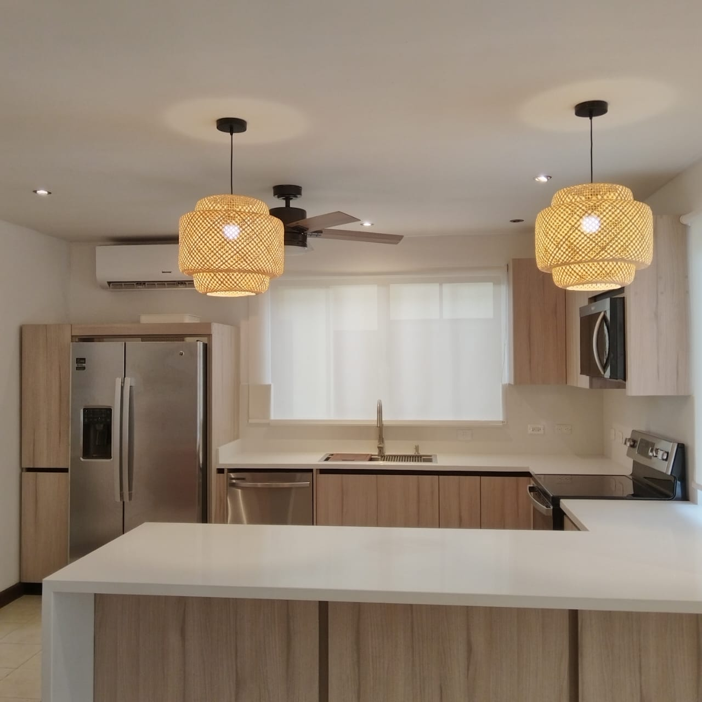
Lavabo lineal
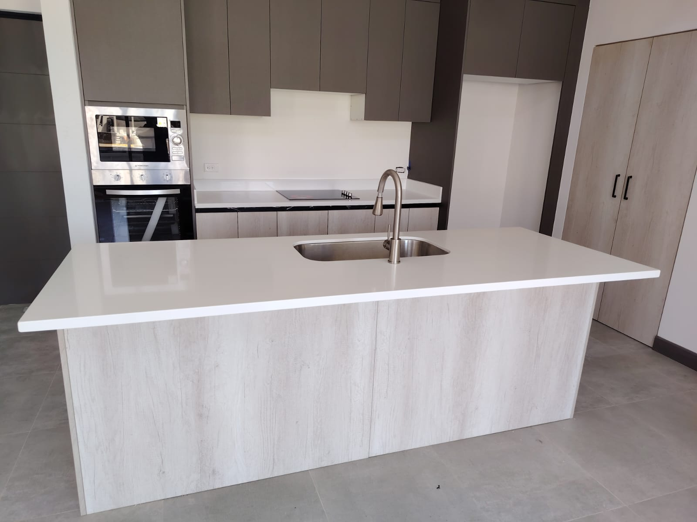
Panel de respaldo
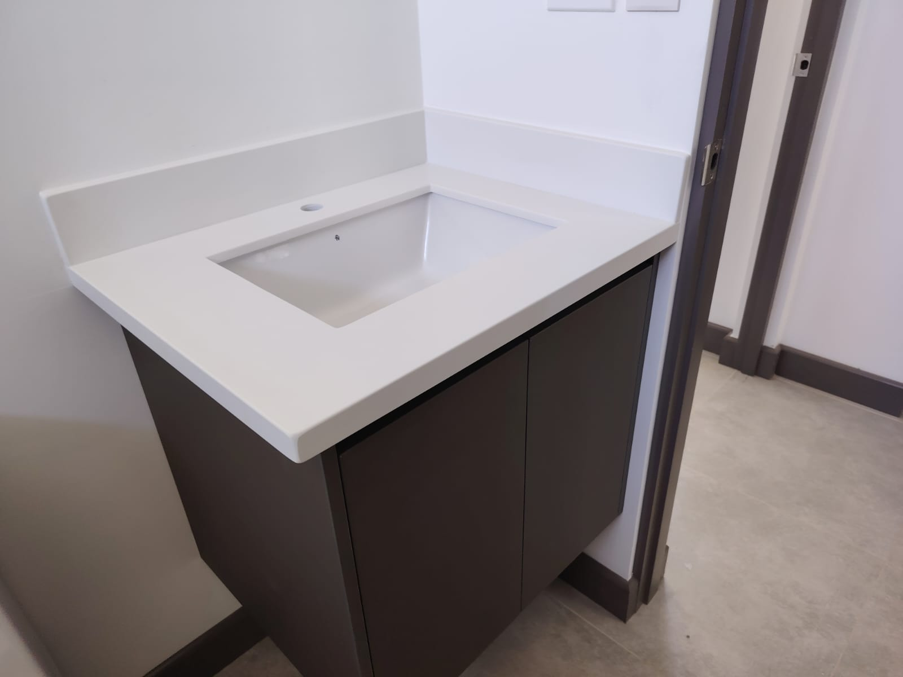
Mesa de trabajo
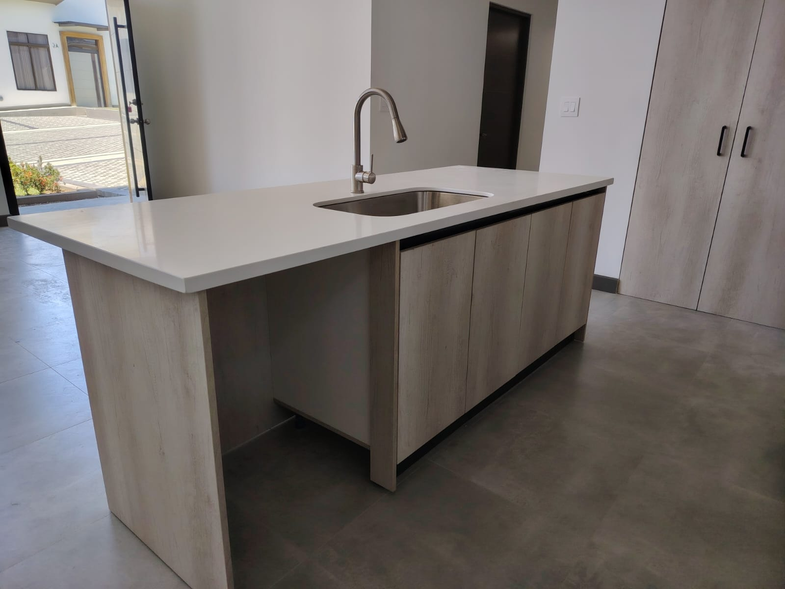
Bañera integrada
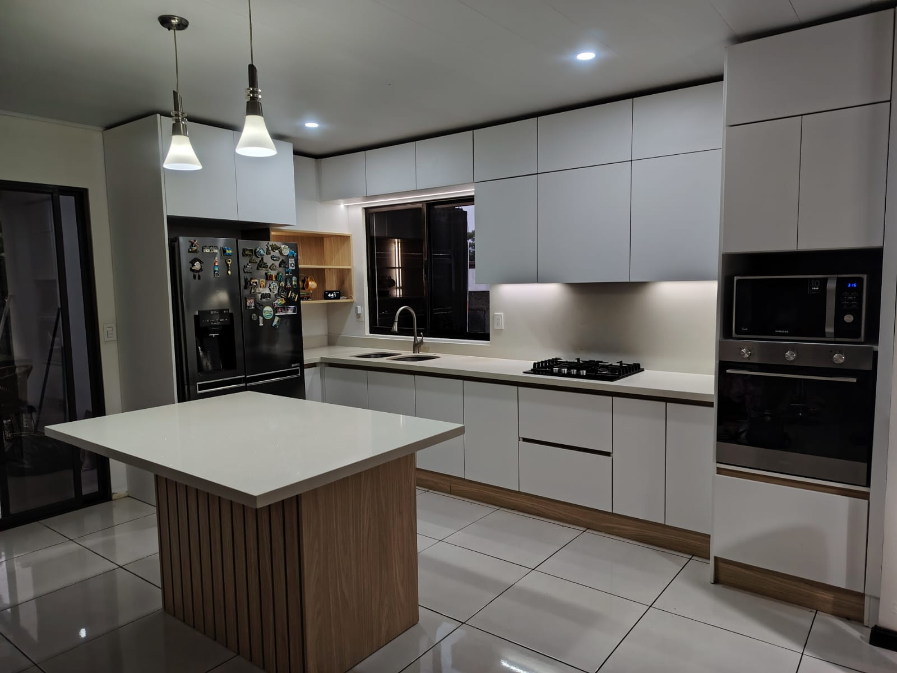
Tope de planchado
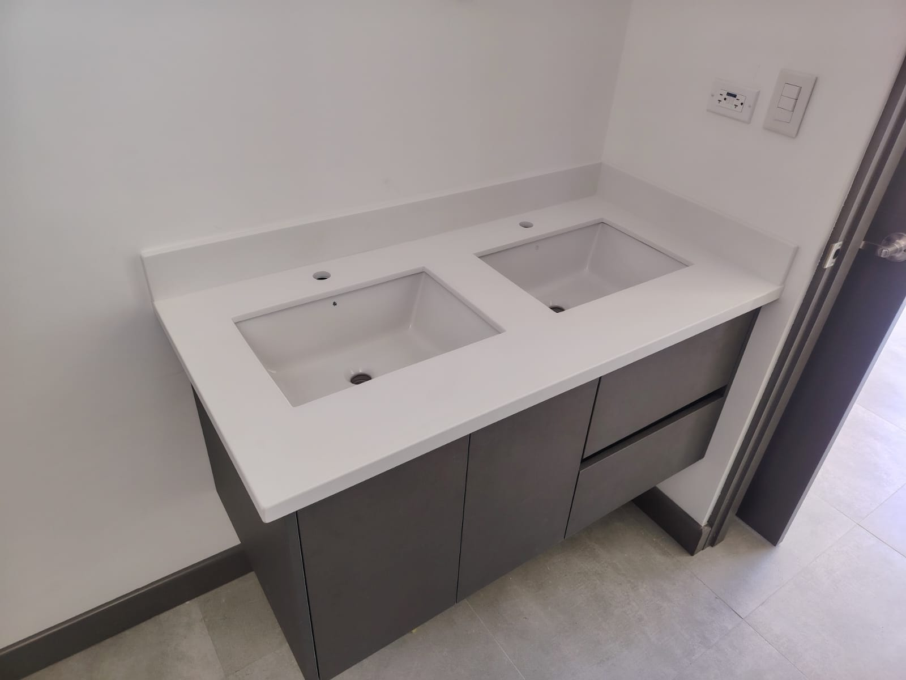
Mueble de servicio
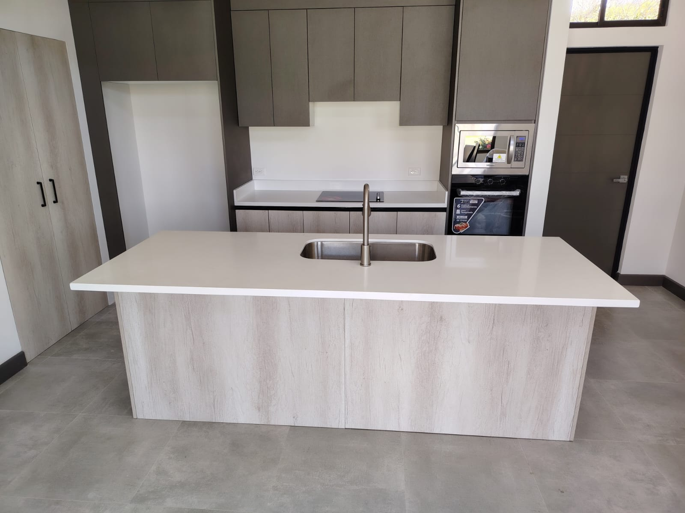
Recepción
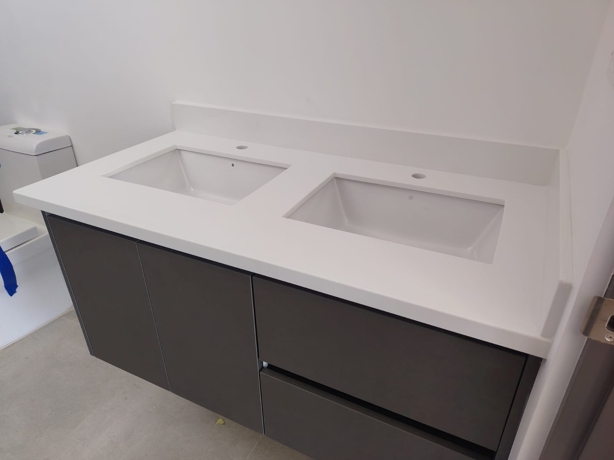
Lavamanos doble
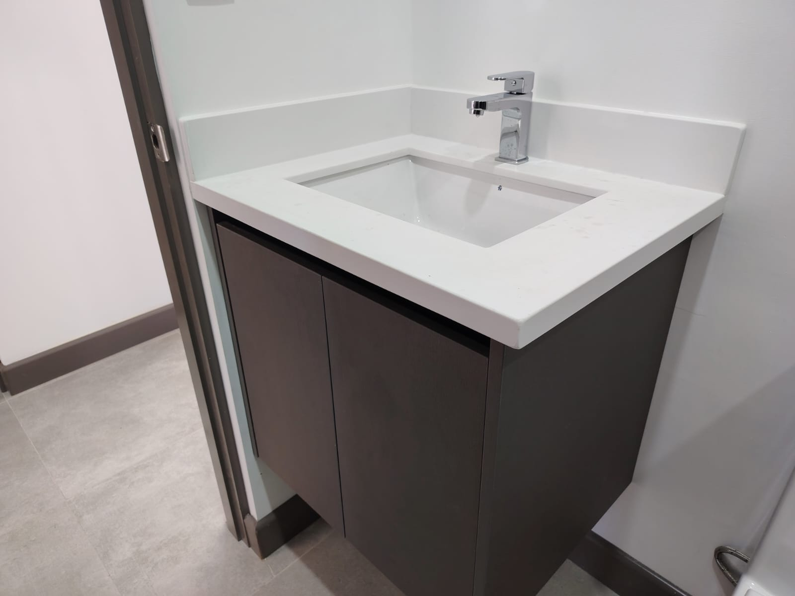
Barra de bar